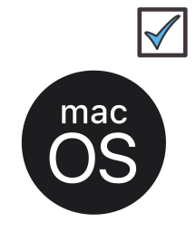

History of \LaTeX
First a bit of history on \LaTeX (pronounced “Lay-tech” or “Lah-tech”). is a typesetting system that was created by Leslie Lamport in 1984. It is based on Donald Knuth’s \TeX typesetting system. LaTeX is widely used in academia for the communication and publication of scientific documents in many fields, including mathematics, computer science, engineering, physics, chemistry, biology, and economics. LaTeX is also used in the humanities and social sciences. LaTeX is free and open-source software. It was the prototype of the modern scientific writing, and it is still the standard in many fields, especially in mathematics and computer science as it’s a good way to write equations, and to go towards literate programming.
As a short motivation, I will show you two books from the same author, one written before using \LaTeX and one after. Compare the two following images (you can click on them to enlarge):
{kind=link}
Conclusion: two books, same author, but very different scientific rendering.
Pros for \LaTeX
Below I list some of the important points that make LaTeX the standard tool for scientific writing.
Stability and reusability
First, \LaTeX guarantees stability in time. You can re-use your files from 20 years ago without any problem (and I did!). You can extract some code you used in a draft or an article, and then use it in a presentation (beamer), a poster, etc., by just copy pasting.
Moreover for large files (e.g., books), when it compiles fine, it stays fine. Ok, you might suffer to reach this point though, but that’s another story.
Open-source software and cross-platform
\LaTeX works fine on most operating systems (OS), for instance on
- Linux
- Windows
- MacOS

Hence, you do not face the problem you might have met while opening a file from Word in Linux (it could be a nightmare, and you could loose information).
Default language in scientific writing
\LaTeX is widely used academia, so you will find a lot of resources and support, including templates, packages, and tutorials (see for instance Overleaf tutorials).
If you don’t know a command, you can try to find it with detexify: just draw the symbol you target and look for the closest output.
Quality of the output
The quality of the output produced by \LaTeX is very high. The typesetting is very professional, and the documents look great. This is especially important for scientific writing, where you want your work to be taken seriously. Hence, publishers often ask for \LaTeX files for the final version of the manuscript. Hence, you will produce pdf files thanks to \LaTeX. Alternatives formats exist but are now mostly outdated, like dvi files or ps files.
Collaborative work: git compatibility
For collaborating \LaTeX is simple to use with git. This is not the case if you version a pdf or a docx file for instance, as they are binary files. Hence, you can use git to version your work, and to collaborate with others. This is especially useful if you are working on a large document with multiple authors, as it allows you to track changes, resolve conflicts, and keep everyone on the same page. Another popular alternative is to use Overleaf, which is an online collaborative writing and publishing tool that makes it easy to work with others on a \LaTeX document. I do not recommend this solution much as this is proprietary, and requires a good internet connection.
Hyperlinks, cross-references, citations, and bibliographies
\LaTeX can handle hyperlinks, cross-references, citations, and bibliographies in a very efficient way. For cross-references, I recommend using the package cleveref, as it will simplify your life if you write a lot of equations, figures, tables, theorems, etc. Typically, this is what you will need in your Ph.D. or M.Sc. manuscript.
For bibliographies I recommend using the more modern biblatex, instead of bibtex. This prove useful if you have several bibliographies, or if you need customize a lot the way you cite your references. The Overleaf website provide a simple introduction to biblatex.
Cons for \LaTeX
As you have understood, \LaTeX is a great tool for scientific writing, but it is not perfect. Here are some of the cons of using \LaTeX:
Steep learning curve
The learning curve for \LaTeX can be steep, especially if you are not familiar with programming or markup languages. However, there are many resources available online to help you learn \LaTeX, including tutorials, forums, and books.
Not WYSIWYG
\LaTeX is not a WYSIWYG (What You See Is What You Get) editor, which means that you have to write the code for your document and then compile it to see the final output. This can be frustrating for some people who are used to working with WYSIWYG editors like Microsoft Word. This is particularly annoying for very graphical documents, like posters, or presentations, where you might want to see the final rendering as you write. Hence for presentations, I would rather recommend using using Quarto, which is a markdown-based tool, that is lighter than \LaTeX (though can use \LaTeX for equations).
Such a drawback is also appearing with large documents. For instance, if you have a large document, you might have to compile it several times to get the references right, or to get the table of contents right. This can be time-consuming, especially if you have a slow computer. For instance, for a Ph.D. manuscript, a book or a very large beamer presentations, it can takes minutes to visualize the final output. It calls for compiling only a few chapters or a few slides at a time.
Debugging is hard in \LaTeX
Debugging in \LaTeX can be difficult, especially if you are not familiar with the language. Errors can be cryptic and hard to understand, and it can take some time to figure out what went wrong (enjoy the logs!). Some tools can help you debug your \LaTeX code, including editors with built-in error checking, or MooseTeX.
(Really) Many packages
There are many packages available for \LaTeX. On one hand, packages can extend the functionality of \LaTeX and make it more powerful and versatile. On the other hand, it can be difficult to find the right package for your needs, and some packages can be incompatible with others (which can be extremely hard to diagnose). Moreover, some packages are not maintained anymore, and might not work with the latest version of \LaTeX.
Tables and figures are not easy to handle
For tables, consider Tables generator, as modifying a \LaTeX table could lead to horrible results. For instance, the following code will include a table in your document:
\begin{tabular}{lllll}
Col1 & Col2 & ... & Col4 & Col5 \\
oih & oih & oih & & oih \\
oh & oih & oi & o & o
\end{tabular}as follows:
| Col1 | Col2 | … | Col4 | Col5 |
|---|---|---|---|---|
| oih | oih | oih | oih | |
| oh | oih | oi | o | o |
| ooh | oh | oh | oho | oho |
Note that in Markdown (the language used to write this document), you can use the following code to include a table:
| Col1 | Col2 | ... | Col4 | Col5 |
|-----|-----|-----|-----|-----|
| oih | oih | oih | | oih |
| oh | oih | oi | o | o |
| ooh | oh | oh | oho | oho |For images, that’s a long story. See for instance this post. Some authors recommend using tikz for simple figures, and pgfplots for plots:I don’t. You could instead use Inkscape to draw your figures, and then export as pdf files, and include the outputs in your \LaTeX document. That’s what I do, and I am happy with the result. This is WYSIWYG (when you draw), and you can easily modify your figure afterwards, and version it ( svg is fine for versioning, while pdf is not). Alternative tools could be using R or Python to generate your plots, and then include them in your \LaTeX document.
What’s next?
In the last few years, some alternatives to \LaTeX have emerged, like Markdown, Quarto, or RMarkdown. These tools are simpler to use than \LaTeX, and they are more WYSIWYG. using I would recommend using Markdown, RMarkdown or Quarto for writing blog posts, reports, presentations or light documents with scientific content.
Moreover, a recent alternative to \LaTeX is Typst, which is a new typesetting system that is designed to be more user-friendly and easier to use than \LaTeX. Typst is still in development, but it shows promise as a modern alternative to \LaTeX.
Additional resources
- Getting Started with LaTeX by M. Frenkel.
- Templates, tips and tools by J. Salmon.